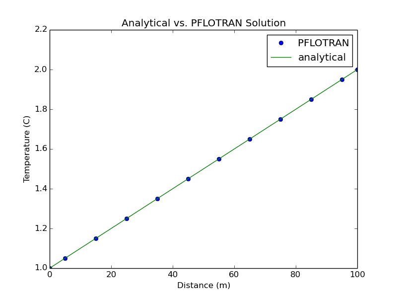
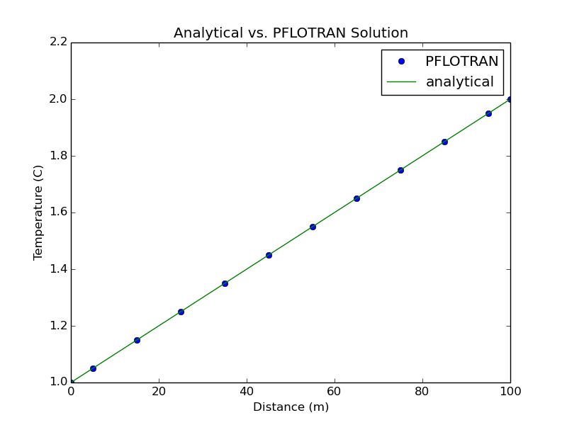

TUTORIAL: 1D Thermal Conduction, BCs of 1st & 2nd Kind (TH Mode)¶
The Problem Description¶
This problem is adapted from Kolditz, et al. (2015), Thermo-Hydro-Mechanical-Chemical Processes in Fractured Porous Media: Modelling and Benchmarking, Closed Form Solutions, Springer International Publishing, Switzerland. Section 2.1.2, pg.15, “A 1D Steady-State Temperature Distribution, Boundary Conditions of 1st and 2nd Kind.”
The domain is a 100x10x10 meter rectangular beam extending along the positive x-axis and is made up of 10x1x1 cubic grid cells with dimensions 10x10x10 meters. The domain is composed of two materials and is assigned the following properties: thermal conductivity K1(x<2L/5) = 100 W/(m-C); thermal conductivity K2(x>2L/5) = 300 W/(m-C); specific heat capacity Cp = 0.001 J/(m-C); density rho = 2,800 kg/m^3.
The temperature is initially uniform at T(t=0) = 1.0C. The boundary temperature at the left end is T(x=0) = 1.0C and a heat flux q(x=L) = -1.5 W/m^2 is applied at the right end, where L = 100 m. The simulation is run until the steady-state temperature distribution develops.
The LaPlace equation governs the steady-state temperature distribution,
The solution is given by,
When the boundary conditions T(x=0) = 1.0C and q(x=L) = -1.5 W/m^2 are applied, the solution becomes,
 

{kind=link}
The PFLOTRAN Input File¶
The PFLOTRAN input file can be downloaded
here.
The SIMULATION Block¶
The SIMULATION block indicates the type of simulation we are running, the
process models we are including, and whether we want an input record file
printed:
SIMULATION
SIMULATION_TYPE SUBSURFACE
PROCESS_MODELS
SUBSURFACE_FLOW flow
MODE TH
/
/
#INPUT_RECORD_FILE
END
In this test, we are running a flow subsurface simulation in TH (thermo-hydro)
mode. We call the simulation SUBSURFACE.
We call the subsurface flow process model flow.
We have commented out the input record file option.
The SUBSURFACE Block¶
Next, the SUBSURFACE block begins with the block-opening statement, and
closes with a block-ending statement:
SUBSURFACE
. . .
. . .
END_SUBSURFACE
The block-opening statement begins immediately after the SIMULATION
block ends, but you will not see the block-ending statement until the bottom
of this input file because this block is very large.
Within the SUBSURFACE block, several cards are required that describe the
simulation we want to run.
The GRID Card¶
The problem domain is a beam of conductive material that consists of 10x1x1 grid cells. Each cell is a 10x10x10 m cube, making the dimensions of the domain 100x1x1 m. We can describe this domain via a structured grid:
GRID
TYPE structured
NXYZ 10 1 1
DXYZ
10
10
10
END
END
The keyword NXYZ indicates the number of grid cells in the x, y, and z
directions. The keywork DXYZ indicates the dimensions of each grid cell
in the x, y, and z directions. Note the DXYZ keyword is a sub-block within
the GRID card, so it must be closed with an END.
The REGION Card¶
Next we describe regions and boundaries of the domain with REGION cards
for each region or boundary. Since the domain consists of two materials,
we first create a region called left and assign it with
COORDINATES that define a box-like volume which defines region left.
Region left contains the domain where x < 2L/5 and is assigned K1
thermal conductivity. Similarly, we create a region called right which
contains the domain where x > 2L/5 and is assigned K2 thermal conductivity:
REGION left
COORDINATES
0.d0 0.d0 0.d0
40.d0 10.d0 10.d0
/
END
REGION right
COORDINATES
40.d0 0.d0 0.d0
100.d0 10.d0 10.d0
/
END
We will apply boundary conditions to the left and right (or west and east) ends
of the domain, so we also define these boundaries now with a REGION card.
Because these are boundaries, the coordinates define a face. We call the regions
left_end and right_end and indicate they are faces with the FACE
keyword:
REGION left_end
FACE WEST
COORDINATES
0.d0 0.d0 0.d0
0.d0 10.d0 10.d0
/
END
REGION right_end
FACE EAST
COORDINATES
100.d0 0.d0 0.d0
100.d0 10.d0 10.d0
/
END
The MATERIAL_PROPERTY Card¶
Next, we describe the material properties within the domain with the
MATERIAL_PROPERTY card. Because this is a conduction test, we intentionally
limit fluid flow by setting the porosity to a very small value, as well as the
permeability (assumed units m^2). In this problem, we have two materials, so
we have two MATERIAL_PROPERTY cards:
MATERIAL_PROPERTY beam_left
ID 1
POROSITY 1.d-5
TORTUOSITY 1.d0
ROCK_DENSITY 2.8E3 kg/m^3
SPECIFIC_HEAT 1.d-3 J/kg-C
THERMAL_CONDUCTIVITY_DRY 100 W/m-C
THERMAL_CONDUCTIVITY_WET 100 W/m-C
SATURATION_FUNCTION default
PERMEABILITY
PERM_X 1.d-20
PERM_Y 1.d-20
PERM_Z 1.d-20
/
END
MATERIAL_PROPERTY beam_right
ID 2
POROSITY 1.d-5
TORTUOSITY 1.d0
ROCK_DENSITY 2.8E3 kg/m^3
SPECIFIC_HEAT 1.d-3 J/kg-C
THERMAL_CONDUCTIVITY_DRY 300 W/m-C
THERMAL_CONDUCTIVITY_WET 300 W/m-C
SATURATION_FUNCTION default
PERMEABILITY
PERM_X 1.d-20
PERM_Y 1.d-20
PERM_Z 1.d-20
/
END
Both materials are identical except for the value of thermal conductivity.
The material density is 2,800 kg/m^3, the specific heat is 0.001 J/kg-C, and
the thermal conductivity is set to 100 W/m-C for the left part of the beam,
and 300 W/m-C for the right part of the beam. To differentiate the two
materials, we call one material beam_left and the other beam_right,
and we assign them different material IDs. We assign both materials
a SATURATION_FUNCTION called default, which is later defined with the
SATURATION_FUNCTION card.
The SATURATION_FUNCTION Card¶
Because this is a thermal conduction only test, the SATURATION_FUNCTION
card should not matter, but it is required for the SUBSURFACE_FLOW process
model. We call this card default, which is consistent with the name in
the MATERIAL_PROPERTY cards. We assign it to be of VAN_GENUCHTEN type,
and set typical values for the residual saturation, and lambda and alpha
parameters:
SATURATION_FUNCTION default
SATURATION_FUNCTION_TYPE VAN_GENUCHTEN
RESIDUAL_SATURATION 0.5d-1
LAMBDA 0.75
ALPHA 1.d-3
END
The STRATA Card¶
The STRATA card links the materials we have defined with the
MATERIAL_PROPERTY cards to the regions we defined with the REGION
cards:
STRATA
REGION left
MATERIAL beam_left
END
STRATA
REGION right
MATERIAL beam_right
END
The OUTPUT Card¶
Here we define what kind of output we want to be generated. We want a
SNAPSHOT_FILE, which is a snapshot of the domain at a specific time.
Because we do not specify specific variables, the default list of variables
for the snapshots will be generated:
OUTPUT
SNAPSHOT_FILE
NO_PRINT_INITIAL
#NO_PRINT_FINAL
FORMAT VTK
/
END
Since this is a steady-state simulation, we do not need output of the initial
state at t=0, so we’ve indicated NO_PRINT_INITIAL. However, we do want
output at the end of the simulation, so we’ve commented out
NO_PRINT_FINAL. The output format will be VTK.
The TIME Card¶
The TIME card controls the timestepping and the simulation time. This
problem tests a steady state solution, so we run the simulation out to a
time after which the solution no longer changes (it has become steady). For
this problem, 100 years is long enough:
TIME
FINAL_TIME 100 yr
INITIAL_TIMESTEP_SIZE 1.d-4 day
MAXIMUM_TIMESTEP_SIZE 2.d0 yr at 0.d0 yr
END
We chose a maximum timestep size of 2 years, applied at the beginning of the
simulation, and also set a small initial timestep size. Because we commented
out NO_PRINT_FINAL in the OUTPUT card, a snapshot file will be generated
at the final time of 100 years.
The FLOW_CONDITION Card¶
Next, we want to indicate the specifics of the initial and boundary conditions
for this problem. We need to specify an initial temperature and pressure. We
do this with the FLOW_CONDITION card:
FLOW_CONDITION initial
TYPE
TEMPERATURE dirichlet
PRESSURE dirichlet
/
TEMPERATURE 1.0d0 C
PRESSURE 101325 Pa
END
Here we’ve called the flow condition initial because it is the initial
condition. In the TYPE sub-block, we specific the type of initial condition
for each parameter. In this case, we want the domain to have an initial
temperature of 1.0C, so the flow condition type for temperature is dirichlet.
We set the pressure to atmospheric (101325 Pa), which is also a dirichlet
type.
For each boundary, we also use the FLOW_CONDITION card to specify boundary
conditions:
FLOW_CONDITION left_face
TYPE
TEMPERATURE dirichlet
PRESSURE dirichlet
/
TEMPERATURE 1.d0 C
PRESSURE 101325 Pa
END
FLOW_CONDITION right_face
TYPE
ENERGY_FLUX neumann
PRESSURE dirichlet
/
ENERGY_FLUX +1.5 W/m^2
PRESSURE 101325 Pa
END
At the left_face (or west face), we apply a dirichlet type temperature
boundary condition of 1.0C. At the right_face (or east face), we apply a
neumann type heat flux boundary condition of -1.5 W/m^2. PFLOTRAN
convention means this is a positive value on the east face. Because we don’t
want any fluid flow for this problem, we apply identical dirichlet type
pressure boundary conditions so that no pressure gradient exists.
The INITIAL_CONDITION Card¶
Similarly to the STRATA card, we use the INITIAL_CONDITION card to
link the initial condition we defined in the FLOW_CONDITION card to the
regions it is applied at:
INITIAL_CONDITION initial_left
REGION left
FLOW_CONDITION initial
END
INITIAL_CONDITION initial_right
REGION right
FLOW_CONDITION initial
END
Above, we’ve linked the initial flow condition to both regions left
and right, because we want the initial condition to be applied over the
whole domain. We give the two INITIAL_CONDITION cards unique names.
The BOUNDARY_CONDITION Card¶
Similarly to the STRATA card, we use the BOUNDARY_CONDITION card to
link the boundary conditions we defined in the FLOW_CONDITION card to the
regions they are applied at:
BOUNDARY_CONDITION left_face
REGION left_face
FLOW_CONDITION left_face
END
BOUNDARY_CONDITION right_face
REGION right_face
FLOW_CONDITION right_face
END
Above, we’ve linked the left_face flow condition to region left_face,
and the right_face flow condition to region right_face. We also give
each of the BOUNDARY_CONDITION cards a unique name to differentiate
them.
The Python Script¶
First, we must import the required packages,
import numpy as np
import matplotlib.pyplot as plt
import sys
Next the default options are set. These are used if no option arguments are given when the python script is executed.
plot_flag = False
print_error = True
passing_crit = 2. # [% error]
If option arguments are provided, they are read in next,
options = sys.argv[1:]
num_options = len(options)
for n in options:
if n == 'print_error=false':
print_error = False
if n == 'print_error=true':
print_error = True
if n == 'plot_flag=false':
plot_flag = False
if n == 'plot_flag=true':
plot_flag = True
We start by constructing the analytical solution. We want to calculate the temperature at the cell centers, because PFLOTRAN output is given at cell centers. We also include the boundaries.
K1 = 100. # [W/m-C]
K2 = 300. # [W/m-C]
q = -1.5 # [W/m^2]
L = 100. # [m]
x_soln = np.array([0.,5.,15.,25.,35.,45.,55.,65.,75.,85.,95.,100.])
T_soln = np.zeros(11)
k = -1
for j in x_soln:
k = k + 1
if j <= (2.*L/5.):
T_soln[k] = np.array( -((q/K1)*j) + 1. )
else:
T_soln[k] = np.array( -((q/K2)*j) + 1. + (q*(2.*L/5.)*((1/K2)-(1/K1))) )
Next, we read the output file that was generated by PFLOTRAN. The temperature solution begins on the 77th line and ends on the 76th line. When we are done, we close the file.
f = open('1D_conduction_BC_1st_kind-001.vtk', 'r')
for i, line in enumerate(f):
if i == 76:
temperature = line.strip()
elif i > 76:
break
f.close()
Now that we have the temperature output stored in temperature, we can
use it to construct the PFLOTRAN solution array with boundary values.
T_pflotran = np.array(temperature.split())
T_pflotran = T_pflotran.astype(np.float)
x_pflotran = np.array([5.,15.,25.,35.,45.,55.,65.,75.,85.,95.])
x_pflotran = np.concatenate(([0.],x_pflotran),axis=0)
T_pflotran = np.concatenate(([1.],T_pflotran),axis=0)
The next step is to plot the PFLOTRAN solution against the analytical solution so we can visually compare the two solutions. If the option to show the plot is chosen, the script will show the generated plot.
plt.plot(x_pflotran,T_pflotran,'o',x_soln,T_soln)
plt.xlabel('Distance (m)')
plt.ylabel('Temperature (C)')
plt.title('Analytical vs. PFLOTRAN Solution')
plt.legend(('PFLOTRAN','analytical'),'best',numpoints=1)
plt.savefig('comparison_plot.png')
if plot_flag:
plt.show()
Finally, we calculate the relative percent error between the analytical solution and the PFLOTRAN solution. If the option to print the error at each grid cell was chosen, the error prints to the screen. Based on the passing criteria, a PASS or FAIL is printed to the screen.
percent_error = 100.0*(T_pflotran-T_soln)/T_soln
max_percent_error = np.nanmax(abs(percent_error))
if print_error:
print 'Percent Error (temperature):'
print percent_error
print 'Maximum Error:'
print max_percent_error
if abs(max_percent_error) > passing_crit:
print '-- Test FAIL --\n'
else:
print '-- Test PASS --\n'